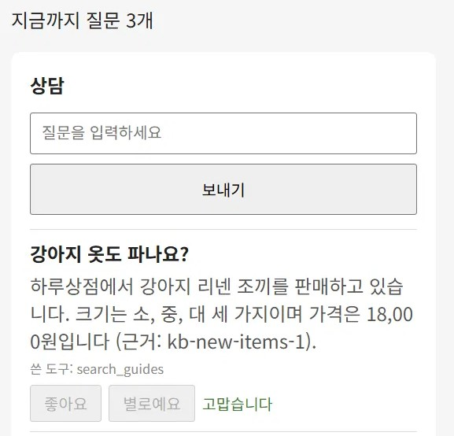
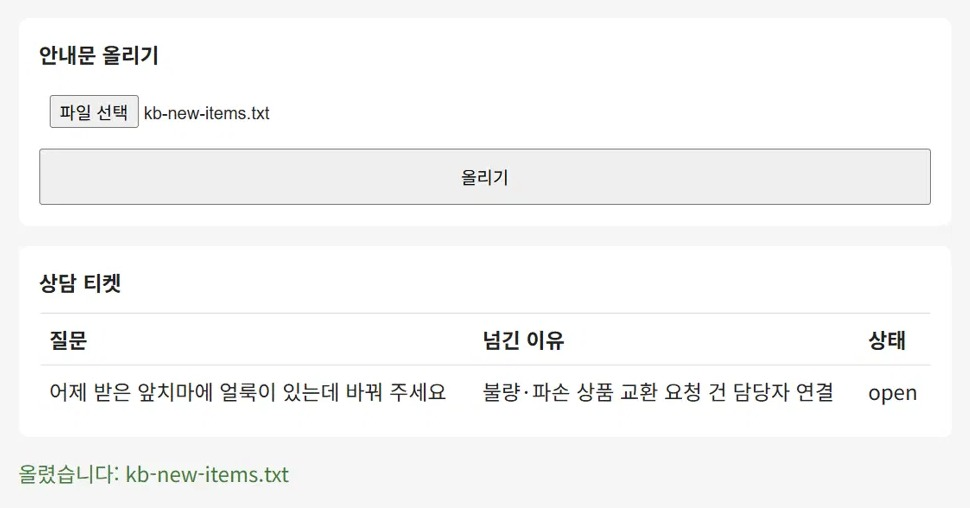

쇼핑몰 고객센터 상담봇
쇼핑몰 손님이 질문을 쓰면 상담봇이 가게 안내문에서 답을 찾아 근거와 함께 답하고, 봇이 답할 수 없는 질문은 가게 사장님에게 넘기는 고객센터입니다. 강사가 준 미션 24개를 차례로 따라가며 화면과 권한 규칙, AI 검색과 답변, 답이 맞는지 재는 평가까지 한 번씩 만들어 본 과정이었습니다.

- 구분
- 멀티캠퍼스 AI 프로덕트 매니저 트랙 · 실습 미션
- 역할
- 서비스 한 장 작성, 콘솔 설정·배포·시험, 평가 결과 기록. 코드는 Claude Code가 작성
- 기간
- 2026.10.30~11.03 (3일)
- 도구
- Firebase · Gemini API · GA4 · GitHub Actions · Claude Code
- 결과
- 손님 상담 화면 · 사장님 관리 화면 · 봇이 못 답한 질문 넘기기 · 평가 점수표
봇이 답할 질문과 사람이 받을 질문을 나눴습니다
가이드는 "안내문에 답이 있고 누가 물어도 같으면 봇, 손님 사정을 봐야 하거나 돈이 오가면 사람"이라는 기준을 주었습니다. 이 기준으로 가게에 들어올 질문을 나눠, 배송 기간·세탁 방법·취소하는 방법은 봇에게, 환불·교환·할인·재입고 시기·내 주문 도착일은 사람에게 맡겼습니다. 나눈 표를 새 AI 채팅에 보여 빠진 자리를 짚게 했고, 그중 필요한 것만 고쳤습니다. 주문 취소는 방법 안내만 봇이 하고, 이미 배송이 시작된 주문의 취소는 환불과 같은 판단이라 사람 쪽으로 옮겼습니다. 가이드가 이미 정해 둔 것이나 이미 막혀 있던 것은 고치지 않았습니다. 나중 미션에서 봇에게 내 주문과 재고를 읽는 도구가 생기면서 처음 정한 경계와 달라졌는데, 이 차이는 고치지 않고 기록해 두었습니다.
